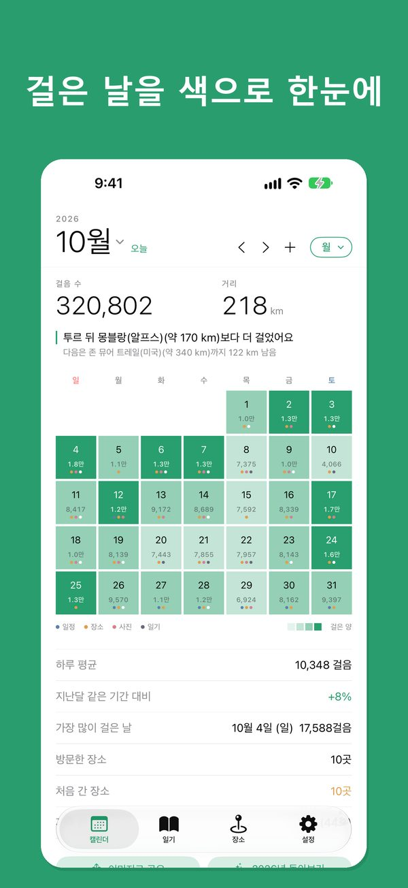
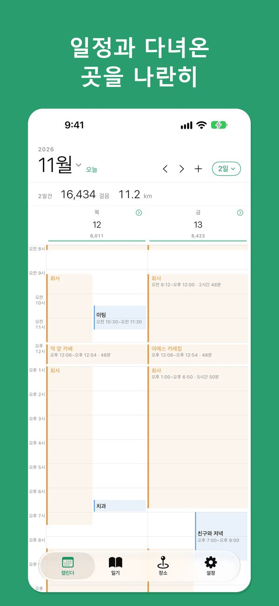
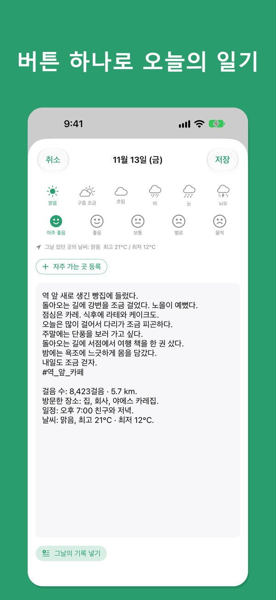
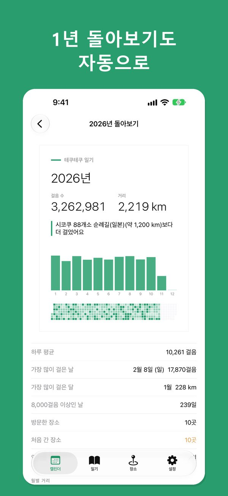
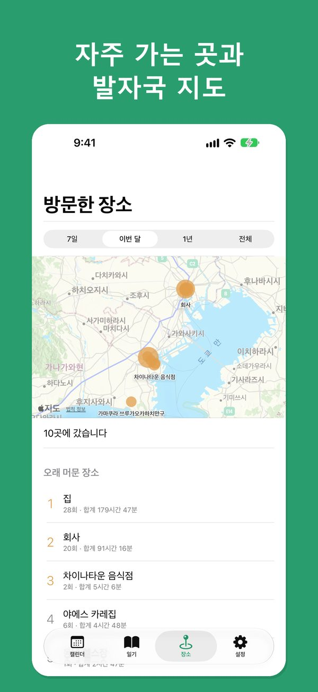
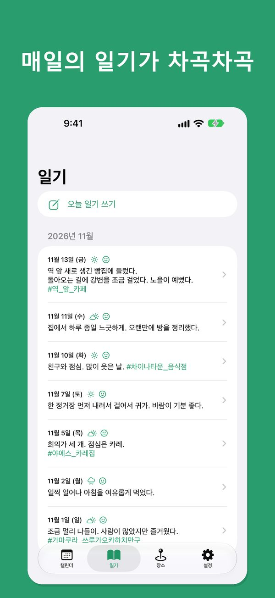

日本語 ・ English ・ Deutsch ・ 한국어 ・ 繁體中文 ・ Español ・ Italiano ・ Français
걸은 길과 일정이 매일의 일기가 된다
걸음 수, 다녀온 장소, 그날의 일정과 날씨. iPhone을 들고 걷기만 하면 매일이 자동으로 기록됩니다. 기록은 내 iPhone 안에만 저장됩니다.
App Store에서다운로드
할 수 있는 것
테쿠테쿠 일기는 걸어온 날들을 자동으로 돌아볼 수 있는 일기 앱입니다.
걷기만 하면 기록
- 건강 앱의 걸음 수와 거리를 캘린더에 색의 농도로 표시
- 다녀온 장소와 머문 시간을 자동 기록 (배터리를 거의 쓰지 않는 방식)
- 그날 있던 곳의 날씨도 표시
일정과 함께
- Google 캘린더 등 iPhone에 추가한 캘린더의 일정을 나란히 표시
- 월/주/5일/2일/1일 보기 전환
- 일정 추가・편집도 바로

일기
- 그날의 걸음 수・장소・일정・날씨를 버튼 하나로 일기에 넣기
- 자주 가는 장소를 탭하면 #해시태그로 남기기
- 날씨와 기분 아이콘

추억
- 그날 찍은 사진과 촬영 장소
- 1년 전 오늘
- 오래 머문 장소와 발자취 지도
- 1년 돌아보기와 월간 요약을 이미지로 SNS에 공유

보기 편하게
- 글자 크기 3단계와 '크고 굵은 글씨'
- 12가지 테마 색상, 다크 모드
- 홈 화면・잠금 화면 위젯

기록은 이 iPhone 안에만 저장됩니다. 광고도 추적도 없습니다. 날씨를 조회할 때만 약 1km 범위로 흐린 위치를 Apple 날씨 서비스에 보냅니다.
최근 32일의 기록은 무료로 모두 볼 수 있습니다. 그 이전의 기록은 한 번 구매로 계속 볼 수 있습니다. 매월 결제는 없습니다. 일기・일정・사진・백업은 무료입니다.
화면

자주 묻는 질문・지원
다녀온 장소가 기록되지 않아요.
iPhone의 설정 → TekuTeku → 위치에서 「항상」을 선택해 주세요. 「앱을 사용하는 동안」으로는 앱이 닫혀 있는 동안의 장소가 기록되지 않습니다.
지나가기만 한 장소가 기록됐어요.
잠깐 머물렀지만 계속 걷고 있던 곳은 자동으로 숨겨집니다. 남아 있다면 하루 화면에서 왼쪽으로 밀어 삭제하거나, 길게 눌러 숨길 수 있습니다.
걸음 수가 나오지 않아요.
건강 앱에서 오른쪽 위의 프로필 → 앱 → TekuTeku로 들어가 걸음 수와 거리 읽기를 켜 주세요.
구입한 항목을 복원하려면?
앱 설정의 구입 항목에 있는 복원 버튼을 눌러 주세요.
버그 신고나 요청은 이메일로 보내 주세요. 사용 중인 기기와 iOS 버전을 함께 알려 주시면 도움이 됩니다.
MORK STUDIO: morkstudio@icloud.com